Lawan Corona, PIC Satgas Bencana BUMN Wilayah Jambi Salurkan Bantuan APD di Dinas Kesehatan Batanghari
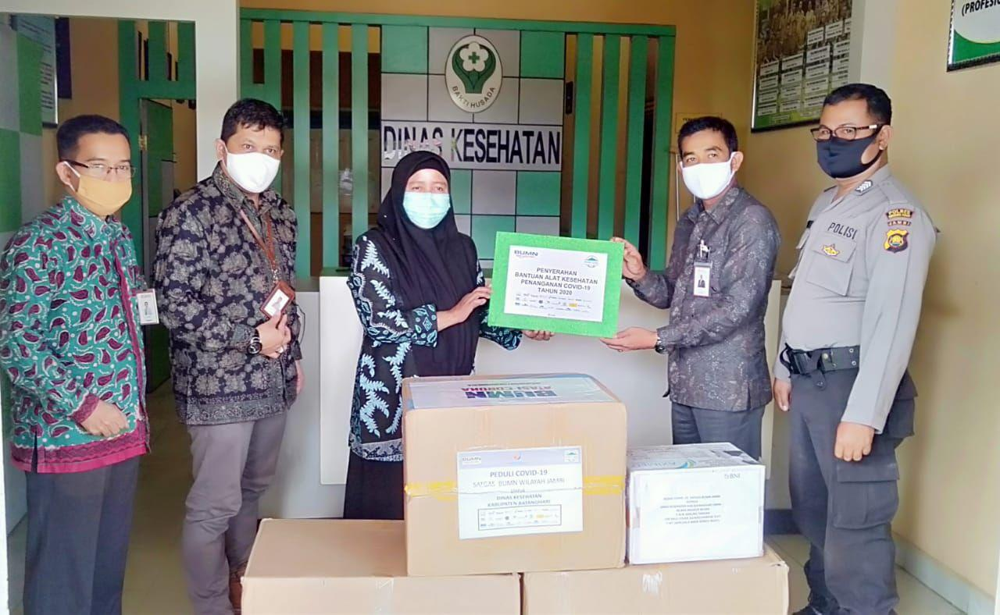
Jambi – GM Witel Jambi Muhammad Zaidan Jauhari di samping juga sebagai Ketua Koordinator Satgas Bencana BUMN Wilayah Jambi memberikan kepercayaan kepada PIC Satgas Batanghari Pimpinan BNI Jambi Amri Hidayat Arief untuk menyalurkan bantuan APD di Dinas Kesehatan Batanghari Jalan Pramuka, Pasar Baru, Muara Bulian, Kabupaten Batang Hari. Penyaluran Bantuan ini dalam bentuk lawan virus corona agar mengurangi jumlah positif COVID-19 di Jambi baik kota maupun daerah. Kamis (18/06) Bantuan ini terdiri dari 40 Box Masker Bedah, 5 Sarung Tangan Medis,100 Baju Cover All/APD/Hazmat Suit,7 Sepatu Boot dan Kacamata Google yang akan disalurkan oleh PIC Satgas Batangahari untuk Dinas Kesehatan Batanghari.
Sementara itu, PIC Satgas Batanghari Amri Hidayat menilai saat ini di tengah merebaknya pandemi Covid-19 yang perlu dilakukan adalah meningkatkan kemurahan hati antarsesama untuk memerangi pandemi virus corona.Menurutnya, saat ini kesehatan sangat berharga bagi semua warga tidak hanya di Indonesia melainkan seluruh warga di dunia.Oleh karena itu, apresiasi harus disampaikan kepada para tenaga kesehatan yang menjadi garda terdepan dalam penanggulangan Covid-19.
Dilanjutkan dengan ucapan Kepala Dinas Kesehatan Batanghari “Terimakasih atas bantuan dari Satgas BUMN Wilayah Jambi semoga dengan bantuan yang sudah disalurkan dapat membuat pandemi ini cepat berlalu, semua masyarakat bisa hidup normal seperti biasanya. Untuk persediaan APD bagi tenaga kesehatan sampai sejauh ini cukup. Pihaknya telah membeli APD belum lama ini dan bantuan APD dari Pemerintah Pusat juga telah diterima. "Kita akan tambah terus untuk antisipasi. Kita juga sudah lakukan rapid test bantuan pusat, sedikit ya cuma 50 kemarin. Tapi itu akan kita prioritaskan untuk ODP yang sangat terindikasi.” Ucap dr. Hj. Elfie Yennie. Kegiaran Penyaluran Bantuan ini ditutup dengan foto bersama tetap mematuhi aturan protocol kesehatan untuk menggunakan masker.(Lulu)
Peduli COVID-19 : Satgas BUMN Wilayah Jambi Salurkan Bantuan Medis Dinkes Tanjabtim
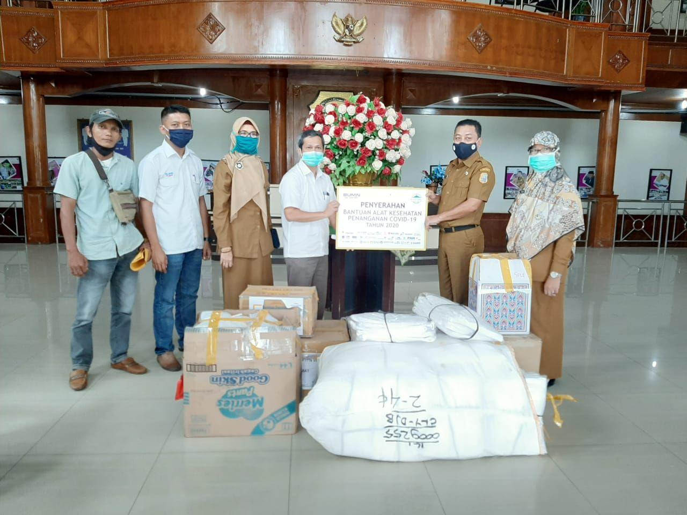
Jambi - Dengan adanya Covid-19, seluruh tenaga medis di dunia mengerahkan banyak tenaga untuk kesembuhan para pasien yang terpapar virus tersebut. Salah satunya Satgas BUMN Wilayah Jambi yang ikut mengerahkan bantuan COVID-19 untuk Peduli COVID-19 kepada tim medis dalam penanggulangan dan pencegahan Covid-19 itu sendiri. Ketua Koordinator Satgas BUMN Wilayah Jambi Muhammad Zaidan Jauhari di samping jabatannya juga sebagai GM Witel Jambi memberikan kepercayaan kepada PIC Satgas Tanjung Jabung Timur Pimpinan Mandiri Suroso Djailani dan Robi Hidayat untuk memberikan bantuan covid-19 kepada Rumah Sakit/Dinas Kesehatan/Puskesmas yang telah ditentukan. Selasa (17/06) Dengan Covid-19 pula, Dinas Kesehatan Muara Sabak kekurangan alat pelindung diri yang akan sangat menghambat pekerja medis disana.
Mendengar hal ini, Satgas BUMN Wilayah Jambi, yang diketuai oleh Muhammad Zaidan Jauhari itu melalui PIC Satgas Tanjung Jabung Timur menyalurkan bantuan beberapa APD beserta minuman yang dapat menjaga ketahanan tubuh para tenaga medis. “Semoga dengan bantuan ini dapat meringankan beban para tim medis dalam menangani pasien COVID-19 dan berharap ke depannya COVID-19 ini segera berakhir dan kita semua bisa beraktivitas kembali secara normal” Ucap Suroso. Mendapat bantuan yang sangat bermanfaat bagi Dinas Kesehatan Muara Sabak ini, Ns.Ernawati selaku kepala Dinas Kesehatan tersebut berujar "Kami mengucapkan terima kasih banyak kepada Satgas BUMN Wilayah Jambi yang telah memberikan bantuan kepada Instansi kami, bantuan ini akan sangat berguna bagi tenaga medis disini," Ernawati mengakhiri. (Lulu/Puspandoyo)
Penyaluran bantuan oleh PIC Satgas BUMN Wilayah Jambi di Kabupaten Bungo
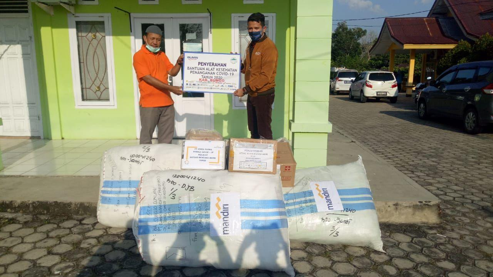
Jambi - Satgas BUMN Wilayah Jambi menyerahkan bantuan sebanyak 491 hazmat untuk membantu tim medis menangani COVID-19.Ketua Koordinator Satgas BUMN Wilayah Jambi Muhammad Zaidan Jauhari di samping jabatannya sebagai GM Witel Jambi menyerahkan bantuan COVID-19 di daerah Kabupaten Bungo kepada Sekertaris PIC Satgas Bungo PNM Benny Satria di DInas Kesehatan Bungo. Mendengar hal ini, Satgas BUMN Wilayah Jambi memberikan bantuan yang akan bermanfaat untuk Dinas Kesehatan Kabupaten Bungo. Satgas BUMN Wilayah Jambi menyalurkan APD beserta vitamin untuk menjaga ketahanan tubuh para tenaga medis di Dinas Kesehatan tersebut.
"Saya selaku kepala Dinas Kesehatan Kabupaten Bungo mewakili seluruh tenaga medis disini, mengucapkan terima kasih banyak kepada Satgas BUMN Wilayah Jambi atas bantuan yang diberikan. Bantuan ini akan sangat berguna bagi tenaga medis ditempat ini," kata Dr. H. Safaruddin Motandang kepada PIC Satgas Bungo. “‘Semoga bantuan yang diberikan dapat bermanfaat bagi tenaga medis dalam menangani COVID-19 dan berharap ke depannya kita bisa kembali merasakan kehidupan normal,Aamiin”’ Ungkap Benny Satria. Kegiatan ini ditutup dengan penandatanganan BAST di Dinas Kesehatan Bungo.(Lulu)
Peduli COVID-19, Satgas BUMN Jambi Beri Bantuan untuk Puskesmas Tahlul Yaman

Jambi - Dalam rangka Telkom Peduli COVID-19, Witel Jambi menjadi salah satu Koordinator Satgas Bencana BUMN Wilayah Jambi.Tenaga kerja medis Puskesmas Tahlul Yaman yang tak mengenal lelah dalam penanggulangan dan pencegahan COVID-19, mendapat dukungan dari BUMN. Dukungan dari BUMN khususnya Posko Satgas Bencana BUMN Wilayah Jambi memberikan bantuan COVID-19, Senin (15/6). Atas kerja keras tenaga medis Puskesmas Tahlul Yaman tersebut, Satgas BUMN Wilayah Jambi memberikan bantuan untuk tenaga medis Puskesmas Tahlul Yaman berupa minuman sehat dan sabun cuci tangan yakni 2 dus susu Bear Brand, 150 pcs I'm Boost, 8 pcs Buavita serta 5 botol minuman penyegar, dan 2 pcs sabun cuci tangan.
"Terima kasih kepada BUMN Wilayah Jambi yang telah memberikan bantuan yang akan sangat bermanfaat untuk puskesmas ini," ujar dr. Noriyah Kepala Puskesmas Tahlul Yaman. Bantuan diserahkan Koordinator PIC Satgas Kota BUMN Wilayah Jambi Wahyu Ilin diketahui oleh Ketua Satgas BUMN Wilayah Jambi Muhammad Zaidan Jauhari yang saat itu diwakilkan oleh PIC Satgas Jambi Puspandoyo.
"Semoga akan sangat bermanfaat bagi puskesmas Tahlul Yaman Pelayangan dan dapat mengurangi jumlah dari COVID-19 di Jambi mengingat untuk jumlah positif COVID-19 di Witel Jambi meningkat," ujar Puspandoyo. Kegiatan diakhiri dengan foto bersama dengan menjalankan aturan protokol kesehatan untuk selalu menggunakan masker. (Lulu/Puspandoyo/Red01)
Koordinator Satgas BUMN Jambi Salurkan Bantuan COVID-19 ke Puskesmas Aur Duri
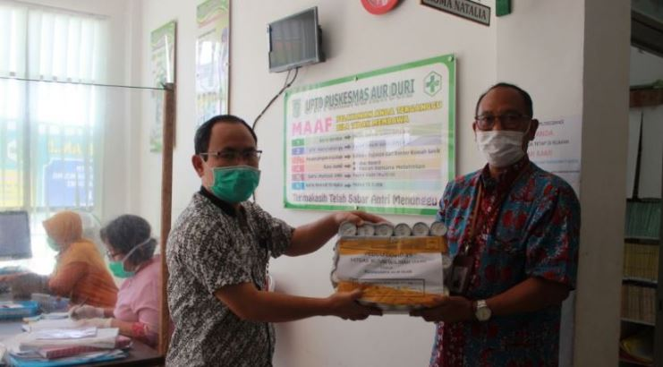
Jambi-Penyaluran Dana Bantuan COVID-19 dari BUMN Jambi sudah direalisasikan oleh beberapa perusahaan BUMN, salah satunya Satgas BUMN Wilayah Jambi di samping itu juga sebagai Witel Jambi. Hadir saat penyaluran bantuan Ketua Koordinator Satgas Bencana BUMN Wilayah Jambi Muhammad Zaidan Jauhari di samping jabatannya sebagai GM Witel Jambi yang saat itu diwakilkan oleh PIC Satgas BUMN Wilayah Jambi Puspandoyo di Puskesmas Aur Duri. Kegiatan berlangsung di Perumnas Aur Duri Blok C No.54, Penyengat Rendah, Telanaipura, Jumat (12/6).
Serah terima bantuan sebagai bentuk kepedulian Telkom pada COVID-19, Penanggulangan terhadap Penyebaran dan Penanganan COVID-19. Satgas BUMN Wilayah Jambi telah menyalurkan bantuan kepada Puskesmas Aur Duri berupa 2 box susu Bear Brand, 4 pcs sabun cuci tangan, 150 pcs I’m Boost, 2 pcs Buavita dan 5 botol Minuman Penyegar. "Terima kasih atas bantuan dari BUMN Wilayah Jambi telah memberikan bantuan Covid-19 ke Puskesmas Aur Duri ini. Bantuan ini pasti bermanfaat bagi tim medis yang ada disini untuk mengurangi jumlah dari penderita COVID-19," ucap dr.Jumhari.
Dilanjutkan dengan sepatah kata dari PIC Satgas BUMN Wilayah Jambi Puspandoyo yang mengatakan bahwa jumlah bantuan disesuaikan dari permintaan yang ada di Posko Satgas Bencana BUMN Wilayah Jambi. Harapannya, bantuan yang diserahkan bermanfaat dan dapat membantu meringankan para penderita yang mengalami COVID-19. Proses penyaluran bantuan tetap melakukan protokol kesehatan pencegah COVID-19 yakni dengan menggunakan masker, mencuci tangan, pengecekan suhu tubuh dan menjaga jarak.(Lulu/Puspandoyo/red01)
Posko Satgas BUMN Wilayah Jambi Salurkan Bantuan APD di Puskesmas Olak Kemang Jambi

Jambi – Ketua Koordinator Satgas Bencana BUMN Wilayah Jambi Muhammad Zaidan Jauhari yang saat itu juga sebagai GM Witel Jambi Salurkan bantuan alat pelindung diri (APD) ke Puskesmas Olak Kemang Jl. K.H. M. Saleh RT.01 RW.01 Kelurahan Pasir Panjang Kecamatan Danau Teluk , Jambi. Penyaluran bantuan dilakukan di 2 puskesmas di Jambi Puskesmas Olak Kemang dan Puskesmas Tahlul Yaman Pelayangan, Jumat (12/6). Penyaluran bantuan diwakili PIC Satgas BUMN Wilayah Jambi Puspandooyo. Usai menyerahkan bantuan, Puspandoyo berharap, bantuan APD bisa membantu para medis dalam memberikan pelayanan kesehatan kepada masyarakat.
“Para medis di puskesmas khususnya perlu mendapat perlindungan dari ancaman pandemi Covid-19. Untuk itu kita saurkan bantuan APD, agar pelayanan kesehatan kepada masyarakat bisa tetap berjalan dengan baik,” ucap Puspandoyo. Bantuan yang diberikan oleh Posko Satgas Bencana BUMN Wilayah Jambi berupa 2 susu bear brand, 4 sabun cuci tangan, 150 I’m Boost, 2 Buavita, 5 botol minuman penyegar. “Bantuan yang telah diberikan oleh Satgas BUMN Wilayah Jambi dalam penanganan COVID-19 sesuai dengan kebutuhan pada tim medis Puskesmas Olak Kemang dan bisa langsung digunakan oleh tim medis dalam menangani penderita COVID-19. Kegiatan ditutup dengan foto bersama dan penandatangan BAST. (Lulu/Puspandoyo/red01)
Posko Satgas Bencana BUMN Witel Jambi Serahkan bantuan ke BPBD Muaro Jambi
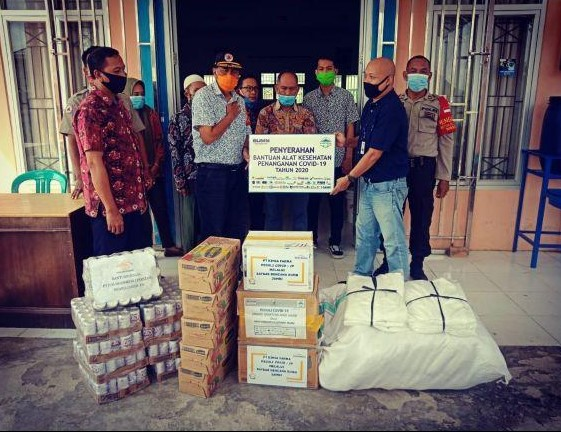
Jambi – Ketua koordinator Satgas Bencana BUMN Wilayah Jambi Muhammad Zaidan Jauhari melalui PIC Satgas Muaro Jambi dari Sucofindo Jambi Harya Suryajat melakukan serah terima bantuan COVID-19 di Posko Satgas Bencana BUMN Wilayah Jambi Jl.Raden Mataher Kelurahan Sulanjana Kabupaten Jambi Timur, Kamis (12/6). Bantuan yang diberikan berdasarkan dari permintaan yang masuk di Posko Satgas BUMN dan akan di realisasikan sesuai dengan DInas Kesehatan, Puskesmas, Rumah Sakit yang ada di Provinsi maupun daerah Jambi.
Kemudian, untuk Bantuan COVID-19 yang diberikan melalui PIC Satgas Muaro Jambi di Posko Satgas Bencana BUMN Wilayah Jambi berupa APD, Vitamin, Minuman Penyegar, susu bear brand dan sarung tangan medis yang akan disalurkan ke BPBD Muaro Jambi. "Semoga bantuan yang diberikan ini akan mengurangi jumlah positif COVID-19 di Jambi dan dapat digunakan oleh team medis sebagaimana mestinya," papar Zaidan.
Kemudian, Harya Suryajat mengucapkan bahwa bantuan akan direalisasikan secepatnya sesuai dari list bantuan yang ada ke BPBD Muaro Jambi. “Terima Kasih saya ucapkan untuk Satags BUMN Wilayah Jambi semoga amal dan kebaikannya bias dibalas lebih lagi dan semoga sukses selalu untuk ke depannya.Bantuan ini pasti sangat bermanfaat dan langsung digunakan sebagaimana mestinya juga sekali lagi saya sangat mengapresiasi untuk Satgas BUMN Wilayah Jambi," tutup Muhammad Zakir sebagai Kepala dari BPBD Muaro Jambi.(Lulu/Puspandoyo/red01)
Melalui ACT, Koordinator Satgas BUMN Witel Jambi Serahkan Bantuan Sembako

Jambi - Dampak COVID-19 di Jambi untuk jumlah positif COVID-19 terus bertambah, Ketua Koordinator Satgas BUMN Jambi Muhammad Zaidan Jauhari di samping jabatannya juga sebagai GM Witel Jambi melakukan penyerahan sembako melalui kolaborasi yang dijalin bersama dengan Aksi Cepat Tanggap (ACT) untuk menanggulangi permasalahan. Kegitan Penyerahan bantuan COVID-19 diselenggarakan di Posko Satgas Bencana BUMN Wilayah Jambi. Penyerahan bantuan tersebut diserahkan langsung oleh Pimpinan ACT Jambi Naufal, Rabu (10/6).
“Kami sebagai Koordinator Satgas BUMN Jambi merasa terpanggil untuk membantu penderita dari COVID-19 yang ada di Jambi baik kota maupun daerah dan masyaakat khususnya di wilayah Jambi dalam rangka menanggulangi Covid-19, Lalu, ACT ini suatu lembaga yang saya tahu persis di dalamnya bahwa sumbangan yang dikumpulkan oleh ACT itu langsung diberikan kepada yang berhak untuk menerimanya. Sehingga, kami meyakini bahwa ACT adalah salah sau lembaga yang cepat dan tanggap dalam menanggulangi hal-hal yang berkaitan dengan bencana.Bantuan yang akan kami berikan berupa 100 sembako yang di dalamnya terdapat beras, indomie dan gula pasir," ucap Zaidan mengawali.
Pimpinan ACT Jambi Naufal menyambut baik atas bantuan sembako yang diberikan oleh Koordinator Satgas Bencana BUMN Wilayah Jambi dalam menanggulangi akibat wabah Covid-19. Ia mengapresiasi dan berterima kasih atas dukungan nyata dari Satgas BUMN Jambi. “Kami akan dokumentasikan secara langsung untuk hasil akhir dari penyerahan bantuan yang diberikan sebagai bukti yang akan dikirimkan Satgas Nasional," tambah Naufal. Naufal berharap berbagai elemen masyarakat di Jakarta dan sekitarnya turut memberikan dukungan terbaiknya bagi program kemanusiaan ACT untuk penanganan dampak COVID-19. Seluruh aksi tidak hanya untuk memenuhi kebutuhan medis, tapi juga membantu masyarakat yang terdampak secara sosial ekonomi.(Lulu/Puspandoyo/Red01)
Koordinator Satgas BUMN, Witel Jambi Terima Bantuan Tahap 2 Telkomsel

Jambi – Bantuan berupa 33 pasang sepatu, 22 buah safety eyewear, 50 pcs masker medis, 50 sarung tangan dan 50 cover shoes merupakan bantuan tahap kedua dari Telkomsel Grapari Jambi di Posko Satgas Bencana BUMN Wilayah Jambi. Hadir saat Serah Terima Bantuan Ketua Koordinator Satgas Bencana BUMN Wilayah Jambi Muhammad Zaidan Jauhari dan Telkomsel Grapari Jambi Sisilia, Rabu (10/06) Ketua Koordinator Satgas Bencana BUMN Wilayah Jambi menyampaikan bahwa bantuan yang ada diperuntukan para medis yang akan dibagikan kepada rumah sakit, puskesmas maupun dinas kesehatan sesuai rujukan permintaan yang masuk pada penanganan COVID-19 di Jambi.
Telkomsel Grapari Jambi juga menyampaikan bantuan yang ada juga semoga dapat diberikan sesuai dengan permintaan yang masuk berdasarkan kebutuhan yg dibutuhkan oleh tim medis. "Ini merupakan bantuan tahap dua yang mungkin akan dibutuhkan oleh kawan-kawan tenaga medis dalam penanganan pasien COVID-19 di Jambi. Mudahan-mudahan cobaan wabah corona ini dapat kita lewati," ajak Sisilia mengakhiri. Kegiatan ini diakhiri dengan penandatangan BAST.(Lulu/Puspandoyo/Red01)
Koordinator Satgas Bencana BUMN, Witel Jambi Terima Bantuan Airnav

Jambi – Witel Jambi sebagai Koordinator Satgas Bencana BUMN Jambi kembali terima bantuan tahap II dari LPPNPI (Airnav Jambi) untuk Penanganan dan Pencegahan dari Pandemi COVID-19 di Posko Satgas Bencana BUMN Jambi Jl. Raden Mataher No.21 Kelurahan Sulanjana Kecamatan Jambi Timur. Hadir Ketua Satgas Bencana BUMN Wilayah Jambi Muhammad Zaidan Jauhari yang di samping itu juga sebagai GM Witel Jambi, Pimpinan dari Airnav Jambi Nizwar dan PIC Satgas Airnav Jambi Novie, Rabu (3/6) Bantuan yang diserahkan berupa dana sejumlah Rp30 juta yang nanti nya akan di realisasikan dalam bentuk alat kesehatan seperti APD, Masker, Sarung Tangan Medis, dan lainnya sesuai dari permintaan yang masuk dari Rumah Sakit, Puskesmas dan Dinas Kesehatan yang ada di Jambi baik Provinsi maupun daerah Jambi.
Kegiatan Serah Terima Bantuan diawali sambutan pertama dari pihak yang menyerahkan bantuan Pimpinan AIrnav Jambi. "Pada siang hari ini Rabu 3 Juni 2020, AIrnav Jambi telah menyerahkan bantuan dana sejumlah Rp.30juta yang nanti nya diharapkan dapat di realisasikan langsung dalam bentuk alkes sesuai permintaan yang telah masuk di Posko Satgas Bencana BUMN Jambi.Bantuan ini bertujuan untuk meringankan beban dari penderita dari COVID-19 dan kita doakan dapat segera pulih dengan bantuan yang telah kita berikan," ucap Nizwar mengawali sambutan di Posko Satgas Bencana BUMN Wilayah Jambi.
Kemudian dilanjutkan dengan sambutan kedua dari pihak yang menerima bantuan sebagai Ketua Koordinator Satgas Bencana BUMN Wilayah Jambi. Zaidan berterima kasih atas bantuan yang disalurkan. Menurutnya, hal tersebut adalah bukti nyata jika masih banyak pihak yang peduli untuk membantu sesama. Bantuan tersebut akan segera disalurkan sesuai dari permintaan yang telah masuk di Posko Satgas Bencana BUMN Jambi.
Harapannya Airnav menjadi semakin sukses dan jaya untuk ke depannya. Adanya keterbukaan dalam memberikan bantuan dan penyalurannya, diharapkan kepercayaan dari berbagai pihak pun meningkat sehingga pihak pemberi bantuan tidak ragu-ragu lagi dalam menyalurkan bantuan di Posko Satgas Bencana BUMN Wilayah Jambi. Kegiatan ditutup dengan serah terima bantuan dan penandatangan BAST. (Lulu/Puspandoyo/Red01)
Telkom Jambi Lakukan Serah Terima Bantuan di Posko Satgas BUMN Jambi
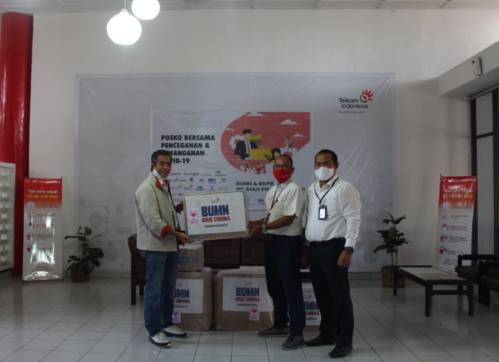
Jambi – Telkom Jambi bersama Ketua Satgas Bencana BUMN Wilayah Jambi melakukan Serah Terima Bantuan dalam Program Telkom BUMN Atasi Corona Peduli COVID-19. Bertempat langsung di Posko Satgas BUMN Jambi Jl.Raden Mataher no.21 kelurahan Sulanjana Kecamatan Jambi Timur. Hadir pada kegiatan Serah Terima Bantuan ini Koordinator Ketua Satgas BUMN Jambi Muhammad Zaidan Jauhari, Asman CDC Witel Jambi Puspandoyo dan juga disaksikan oleh Bank BTN Jambi Yodi Natharia.
Senin (18/05) Bantuan yang diserahkan oleh Witel Jambi dalam Program Telkom BUMN Atasi Corona Peduli COVID-19 di Posko Satgas BUMN Jambi berupa APD Set sejumlah 200 bh dan Masker 200 bh.Bantuan yang diserahkan dapat live diakses oleh BUMN lainnya melalui link yang sudah diberikan, sehingga memudahkan BUMN lainnya dalam memantau dari Kegiatan Posko Satgas BUMN Jambi. Dalam sambutannya Asman CDC Witel Jambi memberikan harapan supaya COVID-19 ini segera berakhir mengingat semakin bertambahnya jumlah positif COVID-19, jangan lupa jaga kesehatan dan mengurangi aktivitas di luar jika tidak berkepentingan.”Ujar Puspandoyo.
Selanjutnya ditambahkan sambutan kedua dari Ketua Satgas Bencana BUMN Wilayah Jambi “Semooga bantuan yang diberikan ini bermanfaat bagi tim medis untuk menangani dari penderita COVID-19 juga mari bersama kita berdoa untuk Kota Jambi bisa cepat kembali beraktivitas normal seperti biasanya” Ungkap Zaidan. Kegiatan ini ditutup dengan foto bersama sebagai bukti serah terima bantuan sudah dilakukan.(Lulu)
Posko Satgas BUMN Jambi : Witel Jambi terima Saluran Bantuan BTN Peduli COVID-19
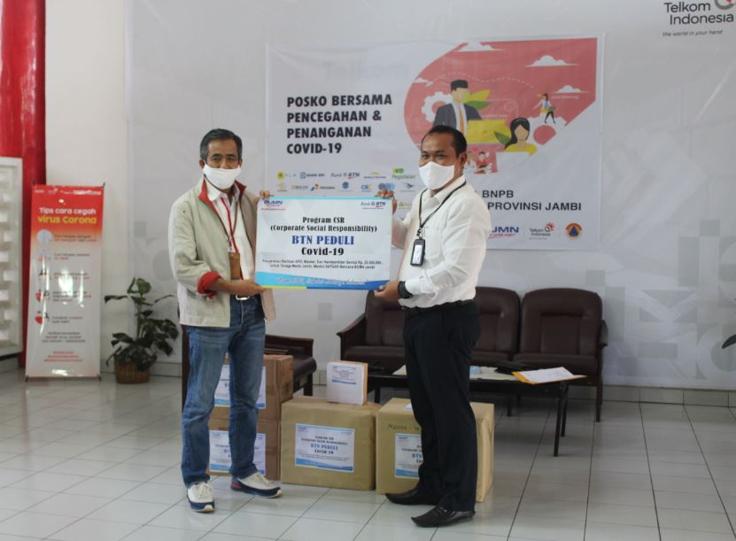
Jambi – Koordinator Ketua Satgas BUMN Wilayah Jambi terima saluran bantuan BTN Peduli COVID-19 di Posko Satgas Bencana BUMN Wilayah Jambi. Hadir pada saat Serah Terima Bantuan Koordinator Ketua Satgas BUMN Wilayah Jambi Muhammad Zaidan Jauhari dan Pimpinan Bank BTN Jambi yang diwakilkan oleh Yodi Natharia. Senin (18/05) Kegiatan ini diawali dengan pembukaan oleh Host Lulu Laudza sambil disaksikan live dari zoom untuk semua BUMN Jambi dapat bergabung menyaksikan dari Serah Terima Bantuan BTN Peduli COVID-19. Setelah pembukaan dilanjutkan dengan kata sambutan pertama dari Bank BTN Jambi “Sebelumnya kami mau memberikan informasi untuk Program CSR dari BTN Peduli COVID-19, Program ini bermaksud untuk membantu penderita dari COVID-19 yang diharapkan bisa cepat sembuh dan kembali hidup normal seperti biasanya dan berharap bantuan ini dapat bermanfaat juga bagi tim medis yang sedang berjuang.
Semoga bantuan ini dapat disalurkan oleh Tim Satgas BUMN Jambi sesuai dari permintaan Rumah Sakit, Puskesmas dan Dinas Kesehatan yang ada baik di Kota Jambi maupun daerah jambi.” Ucap Yodi. Ditambah dengan kata sambutan kedua dari Koordinator Ketua Satgas Bencana BUMN Wilayah Jambi “Terimakasih atas bantuan dari Bank BTN Jambi, semoga amal kebaikan kita semua dapat diterima oleh Allah S.W.T dan Semoga Bank BTN akan selalu sukses ke depannya dan selalu Jaya Aamiin”Tambah Zaidan. Sebelum mengakhiri dari Kegiatan Serah Terima Bantuan di Posko Satgas BUMN Jambi melakukan dokumentasi foto bersama dengan menerapkan physical distancing.
Jambi – Witel Jambi sebagai Koordinator Ketua Satgas BUMN Wilayah Jambi terima saluran bantuan BTN Peduli COVID-19 di Posko Satgas Bencana BUMN Wilayah Jambi. Hadir pada saat Serah Terima Bantuan Koordinator Ketua Satgas BUMN Wilayah Jambi Muhammad Zaidan Jauhari dan Pimpinan Bank BTN Jambi yang diwakilkan oleh Yodi Natharia.Senin (18/05) Kegiatan ini diawali dengan pembukaan oleh Host Lulu Laudza sambil disaksikan live dari zoom untuk semua BUMN Jambi dapat bergabung menyaksikan dari Serah Terima Bantuan BTN Peduli COVID-19.
Setelah pembukaan dilanjutkan dengan kata sambutan pertama dari Bank BTN Jambi “Sebelumnya kami mau memberikan informasi untuk Program CSR dari BTN Peduli COVID-19, Program ini bermaksud untuk membantu penderita dari COVID-19 yang diharapkan bisa cepat sembuh dan kembali hidup normal seperti biasanya dan berharap bantuan ini dapat bermanfaat juga bagi tim medis yang sedang berjuang. Semoga bantuan ini dapat disalurkan oleh Tim Satgas BUMN Jambi sesuai dari permintaan Rumah Sakit, Puskesmas dan Dinas Kesehatan yang ada baik di Kota Jambi maupun daerah jambi.” Ucap Yodi. Ditambah dengan kata sambutan kedua dari Koordinator Ketua Satgas Bencana BUMN Wilayah Jambi “Terimakasih atas bantuan dari Bank BTN Jambi, semoga amal kebaikan kita semua dapat diterima oleh Allah S.W.T dan Semoga Bank BTN akan selalu sukses ke depannya dan selalu Jaya Aamiin”Tambah Zaidan.
Sebelum mengakhiri dari Kegiatan Serah Terima Bantuan di Posko Satgas BUMN Jambi melakukan dokumentasi foto bersama dengan menerapkan physical distancing. Tak lupa pula melakukan penandatangan dari BAST Bantuan Bank BTN Jambi. (Lulu/Puspandoyo)
Posko Satgas Bencana BUMN kembali terima Bantuan PTPN VI Jambi

Jambi – Posko Satgas Bencana BUMN Jambi kembali terima Bantuan PTPN VI Jambi. Hadir pada saat Serah Terima Bantuan Pimpinan PTPN VI Jambi yang diwakilkan oleh M.Syahril dan Ketua Satgas Bencana BUMN Jambi Muhammad Zaidan Jauhari. Kegiatan Serah Terima Bantuan ini dimulai pada pukul 10.00. Jumat(15/05) Dalam kata sambutannya Ketua Satgas Bencana BUMN Wilayah Jambi mengucapkan rasa “terima kasih atas bantuan tahap kedua yang diberikan oleh PTPN VI Jambi berupa APD di Posko Satgas BUMN Wilayah Jambi.
Ia berharap dengan bantuan yang disalurkan ini akan bisa membantu dalam memulihkan penanganan dan pencegahan dari COVID-19”’ Ucap Zaidan. Hal senada juga disampaikan oleh PTPN VI Jambi bahwa “bantuan yang diserahkan berupa APD ini adalah amanah, dan dengan demikian kita harus memeliharanya agar bantuan tersebut bisa berdayaguna dan bermanfaat”’Tambah M.Syahril Kegiatan ini ditutup dengan penandatanganan Berita Acara Serah Terima oleh PTPN VI Jambi dengan Satgas BUMN Wilayah Jambi. (Lulu)
PT.Angkasa Pura Jambi Salurkan Bantuan di Posko Satgas Bencana BUMN Wilayah Jambi
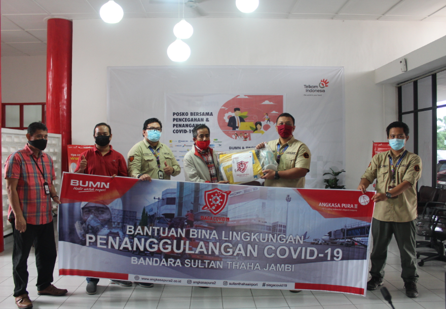
Jambi – Koordinator Satgas Bencana BUMN Wilayah Jambi kembali terima saluran bantuan yang diberikan oleh PT.Angkasa Pura Jambi di Posko Satgas Bencana BUMN Wilayah Jambi. Rabu (13/05) Hadir pada saat serah terima bantuan Pimpinan PT.Angkasa Pura Jambi Muhammad Hendra Irawan dan Ketua Satgas BUMN Wilayah Jambi Muhammad Zaidan Jauhari.
Kegiatan Serah Terima Bantuan ini diawali dengan kata sambutan oleh Pimpinan PT.Angkasa Pura Jambi “Di hari ini sebelumnya kami telah menyerahkan 14 APD Set di Satgas Kota Jambi. Bantuan yang diserahkan diterima langsung oleh Walikota Jambi Dr. H. Syarif Fasha. Dan untuk selanjutnya kami menyerahkan juga 17 APD Set di Satgas BUMN Wilayah Jambi. Semoga bantuan yang diberikan ini dapat mengurangi jumlah COVID-19 mengingat bertambahnya jumlah COVID-19 di Jambi” Ujar Hendra melaporkan.
Dilanjutkan kata sambutan oleh Ketua Satgas Bencana BUMN Wilayah Jambi “Terimakasih atas bantuan yang diserahkan oleh PT.Angkasa Pura Jambi dimana Bantuan ini akan kami realisasikan nanti berdasarkan permintaan dari Rumah Sakit, Puskesmas, Dinas Kesehatan dan lainnya. Sementara kami kompulirkan dahulu di Posko Satgas BUMN Wilayah Jambi” Ucap Zaidan menambahkan. Sebelum penutup dari kegiatan serah terima bantuan ini dilakukan penandatangan Berita Acara Serah Terima sebagai bukti dari penyerahan bantuan sudah dilakukan. (Lulu)
Witel Jambi Terima Bantuan Penanganan COVID-19 dari Kimia Farma di Posko Satgas BUMN Wilayah Jambi
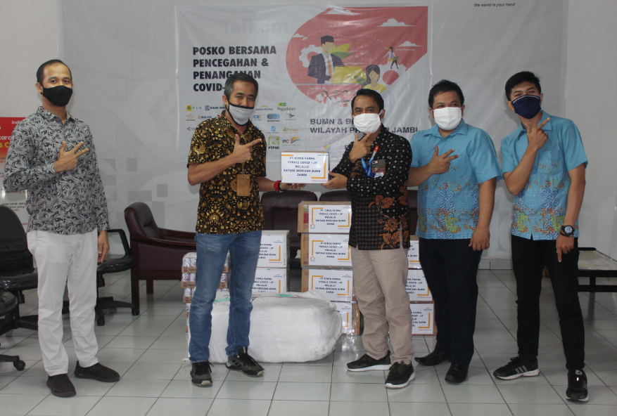
Terima Bantuan Penanganan COVID-19 dari Kimia Farma di Posko Satgas BUMN Wilayah Jambi Jambi – Dalam Penanganan COVID-19 di Wilayah Jambi, Witel Jambi menjadi Koordinator Ketua Satgas Bencana BUMN Wilayah Jambi Muhammad Zaidan Jauhari di samping jabatannya sebagai GM Witel Jambi. Kegiatan Serah Terima Bantuan ini dimulai pada pukul 10.00 di Posko Satgas Bencana BUMN Wilayah Jambi Jl,.Raden Mataher N0.21 Kelurahan Sulanjana Kecamatan Jambi Timur.Jumat (08/05) Kegiatan Serah Terima Bantuan ini dihadiri oleh Pimpinan Kimia Farma Jambi Jeplin Karo-Karo dan Koordinator Ketua Satgas Bencana BUMN Wilayah Jambi Muhammad Zaidan Jauhari.
Bantuan yang diterima di Posko Satgas Bencana BUMN Wilayah Jambi dari Kimia Farma Jambi berupa sarung tangan medis, alcohol 70 %, handsanitizer antispetik tangan, susu bear brand dan lainnya. Selain menyerahkan bantuan melalui Posko Satgas Bencana BUMN Wilayah Jambi, Kimia Farma Jambi juga sebelumnya menyalurkan bantuan melalui Satuan Gugus Tugas Kota Jambi. “Bantuan ini diberikan sesuai dengan kebutuhan dalam penanganan medis,Semoga dengan bantuan ini dapat mengurangi jumlah positif COVID-19 di Wilayah Jambi” Ucap Jeplin Karo-Karo.
Selanjutnya dilanjutkan dengan kata sambutan Koordinator Ketua Satgas Bencana BUMN Wilayah Jambi “Sebelumnya kami telah melakukan realisasi kebutuhan dari rumah sakit dan puskesmas dari permintaan yang ada sehingga bantuan yang sudah di realisasikan bisa sesuai dengan kebutuhan di lapangan walaupun merealisasikannya disesuaikan dengan jumlah yang ada di Posko Satgas BUMN Jambi.”Tambah Zaidan. Kegiatan ini ditutup dengan dokumentasi bersama sebagai bukti dari serah terima bantuan sudah dilakukan. (Lulu/Puspandoyo)
Witel Jambi sebagai Posko Satgas Bencana BUMN Wilayah Jambi Terima Bantuan APD Telkomsel
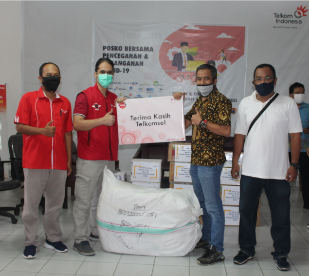
Jambi – Witel Jambi selama ini sebagai Koordinator Satgas Bencana BUMN Wilayah Jambi Muhammad Zaidan Jauhari di samping jabatan nya sebagai GM Witel Jambi cepat tanggap dalam serah terima bantuan yang diberikan oleh BUMN Wilayah Jambi. Khususnya di hari ini Pimpinan Telkomsel Grapari Jambi Umar Syatri dan tim memberikan bantuan berupa APD di Posko Satgas Bencana BUMN Jambi. Jumat(08/05) Bantuan APD yang diberikan oleh Telkomsel Grapari Jambi Umar Syatri sejumlah 74 pcs berupa APD Reusable dan APD One Time Use.
Kegiatan ini dimulai dengan kata sambutan oleh Telkomsel Grapari Jambi “Bantuan APD yang diberikan ini merupakan bantuan Tahap I yang selanjutnya akan ada lagi bantuan Tahap II yang diberikan oleh Grapari Jambi.Semoga dengan bantuan APD ini dapat mengurangi jumlah COVID-19 di Jambi mengingat bertambahnya jumlah COVID-19 di Jambi.” Ucap Umar mengawali.
Selanjutnya kata sambutan kedua oleh Koordinator Satgas Bencana BUMN Wilayah Jambi “Terimakasih telah memberikan bantuan di Posko Satgas Bencana BUMN Wilayah Jambi, saya sangat mengapresiasi bantuan yang diberikan. Bantuan APD akan segera direalisasikan sesuai jumlah permintaan dari RS,Puskesmas dan Dinas Kesehatan yang ada.”Ungkap Zaidan. Kegiatan Serah Terima Bantuan APD ini ditutup dengan penandatangan Berita Acara Serah Terima (BAST) dengan menerapkan Physical Distancing. (Lulu)
Serah Terima Bantuan Jasindo Jambi di Posko Satgas Bencana BUMN Wilayah Jambi
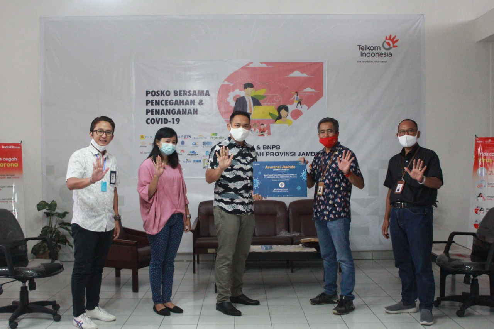
Jambi - Koordinator Ketua Satgas Bencana BUMN Wilayah Jambi Muhammad Zaidan Jauhari di samping jabatannya juga sebagai GM Witel Jambi kembali terima saluran bantuan dari Pimpinan Asuransi Jasindo Jambi Aldo di Posko Satgas BUMN Jl.Raden Mataher no.21.Kegiatan saluran bantuan ini bertujuan untuk membantu penanganan COVID-19 di Provinsi Jambi. Selasa (05/05) Kegiatan ini dimulai dengan opening oleh Lulu Laudza, dilanjutkan dengan kata sambutan dari Pimpinan Asuransi Jasindo “Dalam membantu penanganan COVID-19 ini kami dari Asuransi Jasindo Jambi menyalurkan bantuan dana sejumlah Rp20 juta.Semoga bantuan ini dapat dimanfaatkan dengan semaksimal mungkin demi memutuskan rantai penyebaran COVID-19”Ucap Aldo.
Selanjutnya kata sambutan kedua oleh Koordinator Ketua Satgas Bencana BUMN Wilayah Jambi “Saya sangat apresiasi bantuan yang diberikan Asuransi Jasindo semoga Jasindo semakin maju, sukses dan Jaya untuk ke depannya.Bantuan yang diberikan di Posko Satgas akan di realisasikan berdasarkan permintaan yang ada dari RS dan Puskesmas dan segera di salurkan berdasarkan permintaan yang ada sebagai bentuk tindakan percepatan pencegahan penyebaran dari COVID-19”Pungkas Zaidan.
Lalu kegiatan terima Saluran Bantuan ini ditutup dengan penandatangan Berita Acara Serah Terima Bantuan oleh Koordinator Ketua Satgas BUMN Muhammad Zaidan Jauhari di saksikan ole Pimpinan Asuransi Jasindo Jambi Aldo.Tak lupa pula kegiatan ini diterapkan dengan physical distancing juga pemakaian masker. (Lulu/Puspandoyo).
Satgas BUMN Jambi distribusikan bantuan ke RS dan Puskesmas Merangin
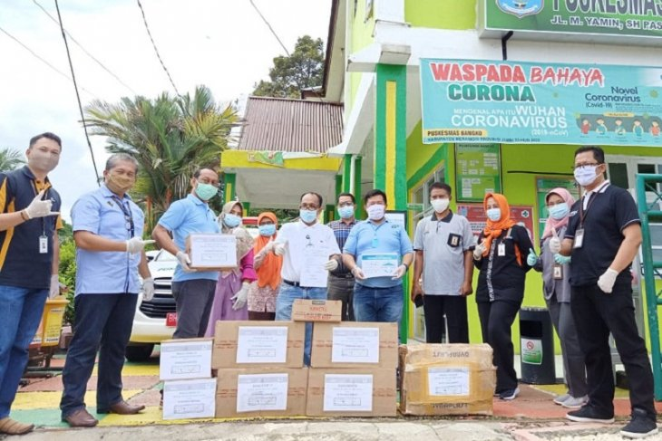
Satgas Bencana BUMN Wilayah Jambi mendistribusikan bantuan berupa APD, vitamin dan nutrisi untuk dua rumah sakit dan dua puskesmas di Bangko Kabupaten Merangin Provinsi Jambi membantu paramedis guna pencegahan dan penanganan COVID-19. Penyerahan bantuan dilakukan oleh Koordinator Satgas BUMN untuk wilayah Kabupaten Merangin yakni PT Pegadaian (Persero) Cabang Jambi bersama BNI, BRI dan Kantor Pos Bangko, Sabtu (2/5). "Hari ini kami menyerahkan bantuan dari BUMN Wilayah Jambi di empat lokasi, sebagian besar alat pelindung diri (APD), ada juga nutrisi dan vitamin untuk petugas paramedis," kata Pimpinan PT Pegadaian (Persero) Cabang Jambi Hendra Hermawanto di Merangin, Sabtu. Selain menyerahkan bantuan di RSUD Kol Abun Jani Bangko yang saat ini diusulkan menjadi rumah sakir rujukan pasien COVID-19, bantuan APD juga diserahkan ke Rumah Sakit Andimas Bangko serta dua puskesmas yakni Puskesmas Pematang Kandis dan Puskesmas Bangko.
Penyerahan bantuan dilakukan di depan bangunan fasilitas kesehatan itu dengan memperhatikan protokol COVID-19 yakni menerapkan phsycal distancing dan bermasker. "Mereka memberikan apresiasi, bantuan itu sangat membantu dan memang dibutuhkan oleh paramedis di sini. Diharapkan bisa menjadi upaya dalam memutus mata rantai COVID-19," kata Hendra Hermawanto saat menyerahkan bantuan itu. Pihak rumah sakit dan puskesmas, kata Hendra menyebutkan dukungan dari berbagai pihak sangat diperlukan baik moril maupun materil karena upaya penanganan COVID-19 tersebut memerlukan perawatan khusus dan dukungan peralatan alat pelindung diri khusus yang tidak sedikit.
Selain menyerahkan bantuan untuk petugas paramedis dan tim penanganan COVID di fasilitas kesehatan itu, tim Satgas Bencana BUMN Jambi juga memberikan dukungan moril dan apresiasi kepada para dokter dan paramedis di sana yang menjalankan tugasnya dengan maksimal. "Kami sampaikan apresiasi kepada para dokter dan tenaga medis di sini yang telah berjuang maksimal melakukan penanganan pasien. BUMN ikut hadir memberikan dukungan dan kita bersama-sama mengatasi pandemi ini sesuai bidang dan peran masing-masing," katanya. Bantuan yang disampaikan adalah alat pelindung diri, baju hazmat, masker, sarung tangan serta lainnya, termasuk nutrisi dan vitamin. Selain di Merangin, bantuan tahap kedua dari Satgas Bencana BUMN Wilayah Jambi juga diserahkan untuk rumah sakit di Kota Jambi dan di Kabupaten Tebo.
Satgas Bencana BUMN Jambi kirimkan bantuan ke Merangin
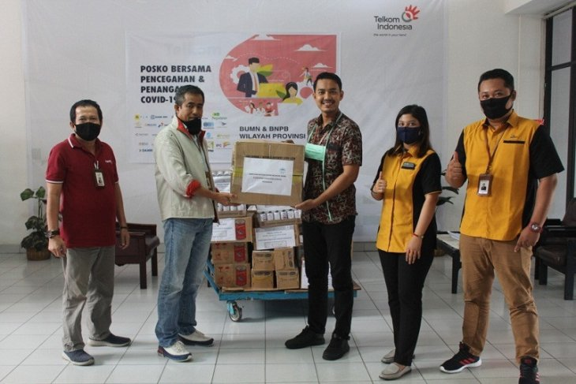
Satgas Bencana BUMN Jambi menyerahkan bantuan Alat Pelindung Diri dan vitamin untuk membantu tim penanganan COVID-19 di daerah itu, Kamis. Penyerahan bantuan dilakukan melalui Koordinator PIC Satgas BUMN Merangin dari PT Pegadaian Jambi ke RSUD Kol Abunjani Bangko, Puskesmas Andimas Bangko, Puskesmas Pematang Kandis dan Puskesmas Bangko. Bantuan serahkan oleh Koordinator Satgas Bencana BUMN Jambi M Zaidan Jauhary kepada perwakilan PIC Satgas Merangin dari Pegadaian Juanda. untuk selanjutnya didistribusikan.
"Bantuan yang disalurkan ini sesuai dengan pengajuan dari fasilitas kesehatan terkait, meski tidak memenuhi semua permintaan, namun kita sampaikan dari persediaan yang ada di Posko," kata Zaidan. Bantuan APD selain kepada rumah sakit rujukan atau rumah sakit yang merawat pasien COVID-19, juga kepada puskesmas sebagai ujung tombak pengawal kesehatan masyarakat yang tidak lepas dari upaya pencegahan COVID-19.
Pos Indonsia Jambi kirimkan 67 koli bantuan BUMN Jambi ke Merangin
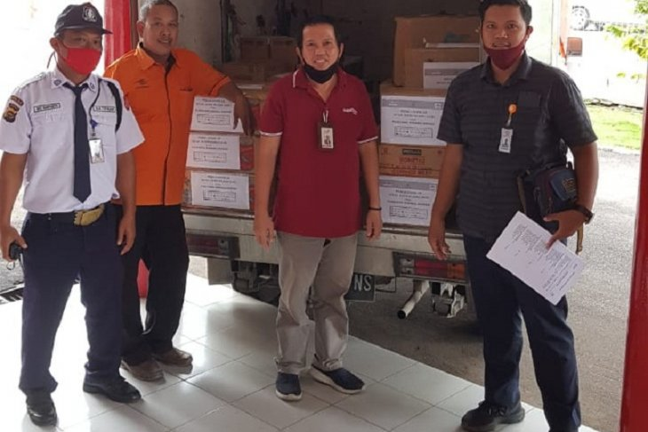
Armada antaran PT Pos Indonesia usai menaikan barang bantuan dari Satgas Bencana BUMN Wilayah Jambi berupa APD dan vitamin sebanyak 67 koli untuk selanjutnya dikirimkan ke RSUD Kol Abun Jani Bangko Merangin dan tiga puskesmas di kabupaten Merangin , melalui PIC Satgas PT Pegadaian. (ANTARA/HO/Satgas Bencana BUMN Jambi).
Taspen kirimkan bantuan BUMN Jambi ke wilayah Tebo
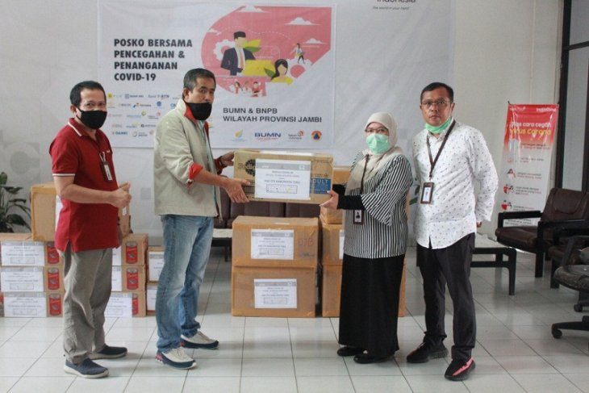
PT Taspen (Persero) Cabang Jambi mendapat tugas mendistribusikan bantuan APD dan vitamin dari Satgas Bencana BUMN Wilayah Jambi untuk wilayah Kabupaten Tebo. Penyerahan bantuan dilakukan oleh Koordinator Satgas Bencana BUMN Jambi M Zaidan Jauhary ke kepada Kepala PT Taspen (Persero) Cabang Jambi Ratna Kusbandiyah sebagai PIC Satgas Wilayah Kabupaten Tebo. Bantuan yang terdiri dari baju hazmat dan vitamin tersebut didistribusikan ke RSUD Sultan Thaha Saipuddin Tebo dan Puskesmas Teluk Lancang Kabupaten Tebo. "Bantuan ini akan kami distribusikan untuk RSUD Tebo dan Puskesmas Teluk Lancang juga di Tebo, Kami berkoordinasi dengan Gugus Tugas Penanganan COVID-19 Tebo," kata Ratna Kusbandiyah.
Sementara itu Koordinator Satgas Bencana BUMN Jambi M Zaidan, menyebutkan bantuan diserahkan oleh masing-masing PIC Satgas di kabupaten kota dengan item yang dibutuhkan di lapangan. "Bantuan ini disampaikan hasil pendataan kebutuhan tim medis setempat, memang tidak semuanya terpenuhi namun disesuaikan dengan bantuan yang sudah terkumpul dari donasi BUMN di wilayah Jambi. Bantuan juga akan dilakukan ke daerah lainnya di Jambi ini," kata M Zaidan Jauhari.
Mandiri serahkan bantuan 300 baju hazmat
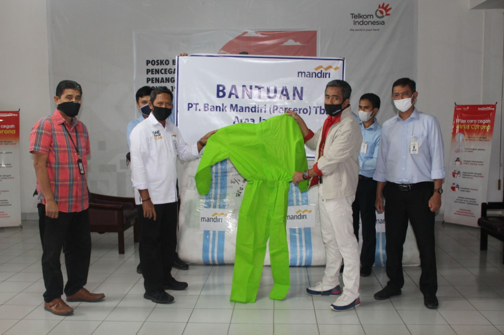
Bank Mandiri Area Jambi menyerahkan bantuan Alat Pelindung Diri (APD) berupa baju hazmat melalui Satgas Bencana BUMN Wilayah Jambi untuk selanjutnya di salurkan ke rumah sakit dan fasilitas kesehatan yang membutuhkanya dalam rangka penanganan pandemi COVID-19 di daerah itu. Penyerahan bantun tersebut dilakukan oleh Pimpinan Bank Mandiri Area Jambi Suroso Djailani yang diterima oleh Koordinator Posko Satgas Bencana BUMN Wilayah di M Zidan Jauhary di Jambi, Selasa. Pimpinan Bank Mandiri Area Jambi Suroso Djailani menyebutkan saat baju hazmat sangat dibutuhkan oleh tenaga medis dan dokter yang menangani COVID-19, maupun oleh tenaga medis di fasilitas kesehatan yang juga menjadi garda terdepan dalam mengawal kesehatan masyarakat pada saat pandemi. "Bantuan ini kita sampaikan melalui Satgas Bencana BUMN Wilayah Jambi, dan sebagai upaya kita bersama untuk bersama-sama BUMN di Jambi untuk membantu penanganan COVID-19.
Kebutuhan terhadap APD ini memang sangat banyak dan dibutuhkan oleh mereka di rumah sakit dan petugas di lapangan," katanya. Ia berhadap dengan kebersamaan dengan BUMN lainnya dalam menggalang bantuan untuk penanganan pandemi ini, bisa membantu dan diharapkan dengan gerakan bersama pandemi segera berakhir," kata Suroso. Sementara itu Koordinator Satgas Bencana BUMN Wilayah Jambi M Zaidan Jauhary menyampaikan apresiasi atas bantuan yang disampaikan oleh Bank Mandiri Area Jambi. Ia menyebutkan, bantuan itu selanjutnya akan didistribusikan ke sejumlah rumah sakit, puskesmas, fasilitas kesehatan serta dinas kesehatan. Rencananya Satgas Bencana BUMN Jambi akan mendistribusikan bantuan yang terkumpul dari sejumlah BUMN di Jambi untuk tahap kedua. "Tahap pertama sudah kami sampaikan di awal April 2020 melalui Gugus Tugas Percepatan Penanganan COVID-19 Provinsi Jambi, untuk tahap kedua bantuan yang terkumpul dari rekan-rekan BUMN yang tergabung dalam Sinergi BUMN di Jambi ini akan segera didistribusikan," kata Zaidan yang juga pimpinan Telkom Witel Jambi itu.
Ia menyebutkan, kepedulian dan kekompakkan BUMN di Jambi sangat maksimal dalam merespon dan menyalurkan bantuannya yang dibutuhkan di lapangan. Satgas telah melakukan pendataan kebutuhan APD di daerah untuk selanjutnya menjadi dasar penyaluran bantuan. "Satgas telah membentuk PIC untuk koordinator 11 kabupaten/kota di Jambi, termasuk juga menempatkan relawan untuk memaksimalkan koordinasi di lapangan dalam penyaluran bantuan maupun kegiatan lainnya dengan berkoordinasi dengan Gugus Tugas Percepatan Pencegahan COVID-19 Provinsi Jambi," kata Zaidan Jauhari. Sementara itu berdasarkan data terakhir, jumlah pasien terkonfirmasi positif di Provinsi Jambi masih terus bertambah. Upaya tracking terhadap pasien terpapar terus dilakukan melalui rapid tes.
Penyerahan bantuan APD ke RSUD Rd Mattaher dan RS Kambang

Satgas Bencana BUMN Wilayah Jambi menyerahkan bantuan tahap kedua berupa alat pelindung diri (APD) untuk membantu kebutuhan dokter dan paramedis di RSUD Raden Mattaher dan RS Kambang Kota Jambi terkait penanganan COVID-19 serta pelayanan kesehatan masyarakat, Kamis (30/4). Penyerahan bantuan APD kepada dua rumah sakit itu dilakukan oleh Koordinator Satgas BUMN wilayah Kota Jambi Wahyu I dan Koordinator Satgas BUMN Wilayah Jambi M Zaidan Jauhary kepada Direktur RSUD Raden Mattaher Jambi dr Feri Kusnadi dan Koordinator Marketing RS Kambang Hermanto. Selain itu juga dilakukan penyerahan bantuan APD untuk RSUD Sulthan Thaha dan Puskesmas Teluk Lancang di Kabupaten Tebo yang diserahkan melalui Koordiantor Satgas wilayah Tebo, PT Taspen melalui Kepala Cabang Taspen Jambi Ratna Kusbandiyah. Bantuan APD tersebut mendapat apresiasi dari Direktur RSUD Raden Mattaher Kota Jambi dr Feri Kusnadi yang menyebutkan bagi tenaga medis APD sangat diperlukan dalam penanganan COVID-19.
"Bagi kami, APD ini yang dibutuhkan sehari-hari. Ini seperti beras dan nasinya. Bila tidak ada beras (APD) maka tidak ada nasinya (perawatan). APD sangat dibutuhkan," kata Feri Kusnadi memberi gambaran. Ia menyebutkan, pihaknya selama ini berupaya untuk menggunaka APD dan alat lainnya secara efektif namun tetap optimal untuk menjaga ketersediaan kebutuhan itu tetap terjamin bagi dokter, tenaga medis dan petugas lainnya. "Dikarenakan ini kemungkinan masih lama, ada modifikasi-modifikasi dari kami cara pemakaiannya," kata Feri. Ia menyebutkan pergerakan orang sangat mempengaruhi penyebaran penyakit akibat COVID-19 ini, baik itu pergerakan di dalam kota, daerah lain maupun di luar negeri. Untuk itu ia berpesan kepada masyarakat untuk mematuhi imbauan pemerintah terkait protokol pencegahan COVID-19.
Pada kesempatan itu, Feri menyebutkan pihaknya akan menjaga amanah bentuk hibah dengan sebaik-baiknya dan mempertanggung jawabkan dengan sebaik-baiknya. Hal sama juga diungkapkan oleh perwakilan dari RS Kambang Kota Jambi yang menyampaikan apresiasi atas bantuan melalui Satgas Bencana BUMN Wilayah Jambi yang memang sangat dibutuhkan dan membantu rumah sakit swasta itu. Sementara itu Koordinator PIC Satgas Bencana BUMN Wilayah Jambi yang juga pimpinan BTN Area Jambi Wahyu I menyebutan bantuan yang disampaikan itu merupakan hasil dari pendataan dari tim di lapangan. Diharapkan bisa membantu memaksimalkan penanganan COVID-19 dan juga dalam mengawal kesehatan masyarakat. Koordinator Satgas Bencana BUMN Wilayah Jambi M Zaidan Jauhary yang juga pimpinan Telkom Witel Jambi menyebutkan, bantuan yang diserahkan itu merupakan bantuan tahap kedua dari Satgas BUMN Jambi. Tahap pertama disalurkan melalui Gugus Tugas Percepatan Penanganan COVID-19 Provinsi Jambi awal April 2020.
Bantuan ini kami kumpulkan dari perwakilan BUMN di Jambi, disalurkan berdasarkan kebutuhan tenaga medis di lapangan. Penyaluran disesuaikan dengan ketersediaan yang ada di Posko, jumlah dan itemnya juga macam-macam. "Jumlah bantuan tak selalu sesuai dengan yang diminta, apa yang ada disalurkan dan kita bagikan dulu, jangan sampai menumpuk di posko, pada tahap ketiga akan distribusikan di kabupaten/kota lainnya," kata M Zaidan. Ia menambahkan Satgas Bencana BUMN Wilayah Jambi juga memiliki koordinator di 11 kabupaten/kota di Provinsi Jambi, yang mana satgas ini tak hanya bergerak pada pandemi COVID-19 ini saja, namun juga berlanjut untuk hadir dalam membantu pemerintah dalam penangnaan bencana lainnya di daerah.
Pelindo II Jambi bantu nutrisi dan vitamin untuk petugas medis
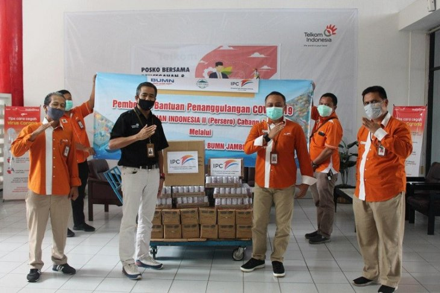
PT Pelindo II Cabang Jambi menyalurkan bantuan nutrisi untuk menjaga kebugaran dan kesehatan paramedis dan petugas di garda depan penanganan COVID-19. Bantuan diserahkan oleh General Manager Pelindo II Cabang Jambi Sandha Trisharjantho kepada Koordinator Satgas Bencana BUMN Wilayah Jambi M Zaidan Jauhari di Posko Satgas BUMN di Kota Jambi, Rabu. Sementara di tempat yang sama juga diterima tambahan bantuan berupa 200 APD dan 200 box masker dari PT Telkom. "Upaya dari para dokter, paramedis dan petugas di garda depan saat ini begitu luar biasa, mereka berada di garda terdepan dan kami apresiasi kerja keras mereka," kata General Manager Pelindo II Cabang Jambi Sandha Trishatjantho. Pihaknya menyalurkan bantuan nutrisi seperti susu, minuman peningkat daya tahan tubuh serta vitamin yang diterima langsung oleh petugas di Posko Satgas Bencana BUMN Wilayah Jambi. Dia berharap kebersamaan dan kekompakkan BUMN di Jambi serta institusi dan lembaga lainnya bisa membantu upaya percepatan penanganan COVID-19 di Jambi. "Pengaruh pandemi ini begitu besar pada semua sektor, dan kami berharap segera berakhir. Kami berharap masyarakat berperan dan disiplin mengikuti anjuran pemerintah menggunakan masker, cuci tangan dan jaga jarak dalam beraktivitas," kata Sandha.
Sementara itu Koordinator Satgas Bencana BUMN Jambi M Zaidan Jauhary menyampaikan apresiasi atas bantuan dari Pelindo II Cabang Jambi. Menurut dia, kebersamaan semua pihak saat ini sangat diperlukan dan semangat gotong royong merupakan bagian dari solusi mengatasi pandemi ini. "Solidaritas bersama dan gotong royong menjadi solusi dan kekuatan yang diperlukan saat ini untuk mengatasi pandemi. Kami berupaya untuk menghimpun bantuan dan selanjutnya disalurkan kepada rumah sakit dan fasilitas kesehatan di daerah dalam penangnaan COVID-19" kata Zaidan Jauhary. Ia menyebutkan, penyaluran bantuan dari Satgas BUMN Wilayah Jambi gelombang kedua akan disalurkan pekan ini baik ke rumah sakit rujukan, puskesmas maupun institusi terkait dalam penanganan COVID-19.
Satgas telah membentuk koordinator wilayah untuk pendataan kebutuhan bantuan serta penyaluran bantuan di sebelas kabupaten kota di Provinsi Jambi, serta melibatkan relawan. "Koordinasi di sebelas kabupaten/kota, melalui gugus tugas setempat sudah dilakukan, dan kami juga terus koordinasi dengan Gugus Tugas Percepatan Penanganan COVID-19 Provinsi Jambi," kata Zaidan Jauhary menambahkan. Sebelumnya Satgas Bencana BUMN Jambi telah menyalurkan bantuan tahap pertama melalui Gugus Tugas Percepatan Penanganan COVID-19 Provinsi Jambi pada awal April 2020.
Pegadaian dan Askrindo serahkan bantuan penanganan COVID-19 melalui Satgas Bencana BUMN Jambi
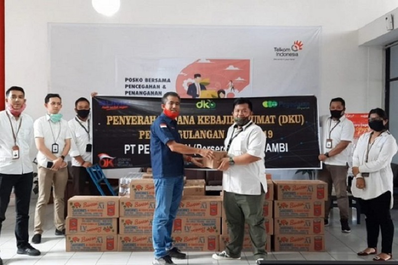
PT Pegadaian (Persero) dan PT Askrindo Cabang Jambi menyerahkan bantuan untuk membantu tim paramedis dan petugas di garda depan penanganan COVID-19 di Provinsi Jambi yang diserahkan melalui Satgas Bencana Nasional BUMN wilayah Jambi. Penyerahan bantuan dilakukan di Posko Bersama Satgas Bencana BUMN Wilayah Jambi di Kantor Telkom Witel Jambi Kota Jambi, Selasa. Bantuan tersebut diterima oleh Koordinator Satgas Bencana Nasional BUMN Wilayah Jambi M Zaidan Jauhari untuk selanjutnya akan didistribusikan kepada rumah sakit rujukan, puskesman dan petugas di garda depan pencegahan pandemi itu. "Terimakasih atas dukungan dari kawan-kawan BUMN di Jambi, mudah-mudahan bantuan ini dapat mendukung petugas di lapangan melaksanakan tugas mulianya terkait penanganan COVID-19,” kata Ketua Satgas Bencana BUMN WilayahJambi M Zaidan Jauhari.
Pada kesempatan itu PT Pegadaian Area Jambi menyerahkan Dana Kebajikan Umat Penanggulangan COVID-19 berupa bahan makanan, nutrisi dan bantuan lainnya. Sementara itu Askrindo menyerahkan alat pelindung diri. Masing-masing diserahkan oleh perwakilan masing-masing. Dijelaskan M Zaidan, Bantuan yang dihimpun dari BUMN di Jambi akan diserahkan ke pada petugas garda terdepan penanggulangan COVID-19 di Provinsi Jambi sesuai dengan arahan dari Kementerian BUMN. Bantuan-bantuan yang telah dihimpun tersebut akan di serahkan ke fasilitas Kesehatan atau rumah sakit baik fasilitas kesehatan milik BUMN, pemerintah dan swasta yang telah di tunjuk sebagai rujukan bagi pasien COVID-19. "Bantuan ini kita jadwalkan akan di serahkan pada pekan ini bersama bantuan lainnya yang telah dihimpun, namun akan kita koordinasikan terlebih dahulu bersama dengan rekan-rekan BUMN di Jambi yang juga tergabung dalam Forum Sinergi BUMN Jambi,” kata M Zaidan.
Penyerahan bantuan itu juga dilakukan dengan memperhatikan protokol kesehatan seperti pshycal distancing dan menggunakan masker penutup wajah. "Karena kondisinya seperti ini, kta lakukan secara daring melalui video conference aplikasi zoom. Tujuannya agar seluruh rekan-rekan BUMN di Jambi dapat menyaksikan secara langsung penyerahan bantuan dengan tetap mematahui protokol Kesehatan dalam pencegahan penyebaran COVID-19," kata Zaidan.
Sementara itu BUMN wilayah Jambi yang terhimpun dalam Forum Sinergi BUMN langsung bergerak menghimpun dan menyerahkan bantuan. Sebelumnya bantuan dari Satgas Bencana BUMN Wilayah Jambi diserahkan ke Posko Satgas Bencana BUMN Provinsi Jambi yang diterima langsung oleh Gubernur Jambi H Fachrori Umar. Selain itu sejumlah bantuan juga mengalir dari sejumlah BUMN Cabang Jambi lainnya dalam bentuk bantuan alat pelindung diri, bahan makanan, nutrisi, susu, vitamin, serta yang lainnya. "Kita lakukan penghimpunan bantuan dari BUMN di Jambi ini, maksudnya agar penyerahan bantuan terkoordinasikan dan tidak menumpuk ," kata Zaidan. Satgas bencana BUMN Jambi telah membentuk koordinator di setiap kabupaten/kota yang dimotori kantor BUMN untuk mendata kebutuhan di lapangan. "Fokus kita kepada alat pelindung diri dan alat kesehatan, termasuk juga nutrisi dan vitamin untuk membantu paramedis agar tetap bugar dan sehat," kata Zaidan menambahkan.
PTPN6 sumbang baju hazmat dan masker melalui Satgas Bencana BUMN Jambi
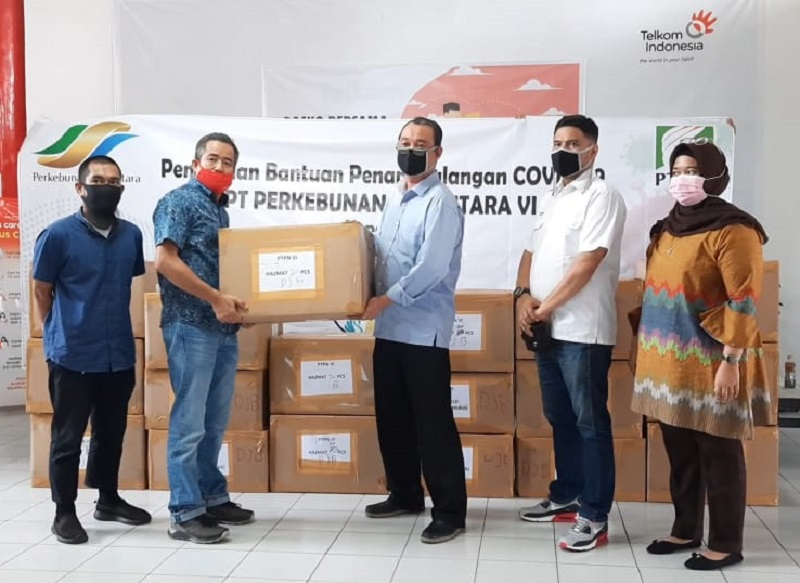
PT Perkebunan Nusantara (PTPN) 6 menyalurkan bantuan Alat Pelindung Diri (APD) dan masker muka melalui Satgas Bencana BUMN Wilayah Jambi untuk membantu paramedis yang melakukan penanganan CPVID-19 di garis depan. Bantuan dari BUMN yang terhimpun selanjutnya akan diserahkan ke RS rujukan penanganan COVID-19 dan Puskesmas yang tersebar di 11 kabupaten/kota di Provinsi Jambi. (Muhammad Hanapi)
Taspen serahkan bantuan melalui Satgas Bencana BUMN wilayah Jambi
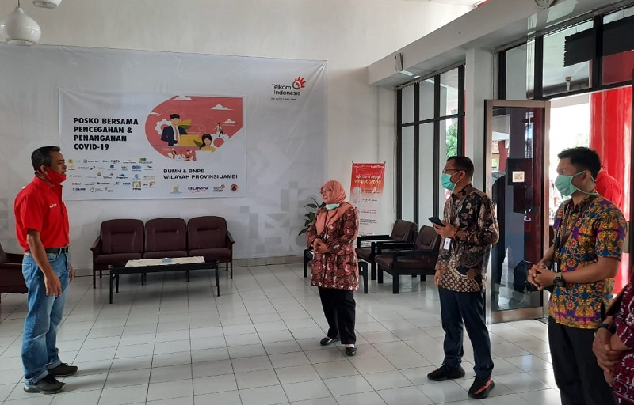
Kepala PT Taspen (Persero) Cabang Jambi Ratna Kusbandiyah tengah menyerahkan bantuan dari BUMN tersebut kepada Koordinator Satgas Bencana BUMN Wilayah Jambi M Zaidan Jauhari untuk penanganan COVID-19 di wilayah Provinsi Jambi. Posko Satgas Penanggulangan Bencanan BUMN Jambi menghimpun bantuan dari BUMN yang beroperasi di daerah itu untuk selanjutnya diserahkan untuk membantu paramedis dan petugas di garda terdepan penanganan COVID-19 di Provinsi Jambi. Satgas Penanggulangan Bencana BUMN Jambi memiliki koordinator perwakilan di kabupaten/kota di wilayah Jambi yang pada masa penanganan pandemi kali ini dikerahkan untuk mendata kebutuhan APD dan alat kesehatan di daerah. Bantuan yang sama juga disampaikan sejumlah BUMN dan perwakilannya di Jambi baik dalam bentuk alat pelindung diri, alat kesehatan, vitamin, nutrisi dan bahan makanan. (M Hanapi)
Sucofindo bantu APD dan vitamin melalui Gugus Tugas Bencana BUMN Jambi
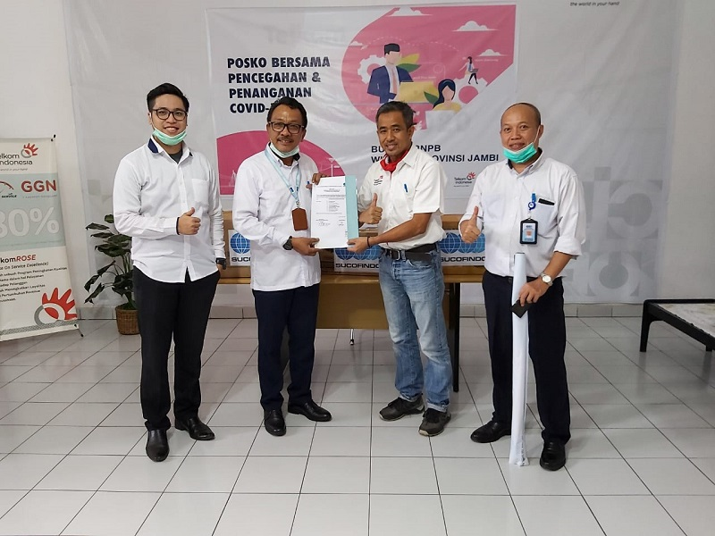
PT Sucofindo Cabang Jambi menyerahkan bantuan berupa alat pelindung diri (APD) dan vitamin untuk mendukung perjuangan personel garda terdepan pencegahan terhadap penyebaran COVID-19 di daerah itu. Bantuan Sucofindo disampaikan melalui Posko Gugus Tugas Bencana BUMN Wilayah Jambi. Bantuan diserahkan oleh Kepala Sucofindo Cabang Jambi Andhies Arman melalui Kepala Bidang Operasi kepada Koordinator Gugus Tugas Bencana Nasional BUMN wilayah Jambi M Zaidan Zauhari, Senin. Bantuan yang disampaikan salah satu perusahaan BUMN di Jambi beripa masker medis, baju APD, baju coverall disposible, visor mask dan nurse cap, sarung tangan kain, termometer gun, sepatu, glove disposible, multibitamin dan susu murni.
Selanjutnya barang bantuan tersebut akan disalurkan ke rumah sakit dan puskesmas bersama bantuan dari Gugus Tugas Bencana Nasional BUMN wilayah Jambi lainnya sesuai dengan program yang telah disusun oleh tim gugus tugas BUMN di daerah itu. BUMN wilayah Jambi membukan Posko Gugus Tugas Bencana Nasional BUMN dengan koordinator wilayah atua PIC wilayah Jambi PT Telkom Indonesia. Sebelumnya Gugus Tugas Bencana Nasional BUMN Wilayah Jambi telah menyerahkan bantuan pendahuluan senilai Rp94 juta ke Gugus Tugas Penanganan COVID-19 Provinsi Jambi yang diterima langsung oleh Gubernur Jambi H Fachrori Umar selaku ketua gugus tugasnya. Gugus Tugas Bencana Nasional BUMN Wilayah Jambi telah melakukan koordinasi dengan RSUD Raden Mattaher Jambi terkait kebutuhan alat pelindung diri dan perlatan kesehatan yang dibutuhkan rumah sakit itu dalam penanganan pasien COVID-19 untuk 30 hari ke depan.
Sementara itu Kepala Cabang PT Sucofindo Jambi Andhies Arman menyebutkan bantuan itu sebagai bentuk kepedulian perusahaan pada masyarakat Jambi dimana perusahaan berada. Melalui program CSR, menurut dia terpanggil untuk ikut berkontribusi melawan COVID-19 dan ini juga merupakan tanggung jawab bersama sebagai warga negara RI serta insan pegawai BUMN. "Semoga pemberian bantuan ini dapat bermanfaat dan kita sama-sama berdoa agar pendemik ini segera berakhir," kata Andhies Arman menambahkan. (Muhammad Hanapi)
Jasa Raharja Jambi salurkan bantuan bina lingkungan penanggulangan COVID-19
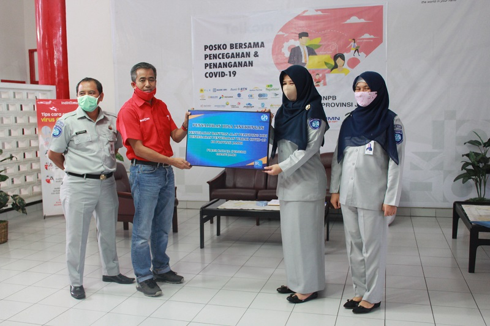
Kepedulian Jasa Raharja Jambi dalam penanggulangan wabah COVID-19 tidak pernah berhenti. Kali ini Jasa Raharja Jambi menyalurkan bantuan bina lingkungan fitur peningkatan kesehatan, untuk penanggulangan wabah COVID-19 melalui Satgas Bencana Nasional BUMN Penanganan COVID-19 di Wilayah Jambi. Kepala Jasa Raharja (Persero) Cabang Jambi, Eva Yuliasta, Rabu (22/4) menjelaskan bantuan tersebut berupa Alat Pelindung Diri (APD), yang terdiri dari 90 pieces baju cover all, 100 pasang sarung tangan steril, 100 pasang sarung tangan panjang, 10 unit gun thermometer, 20 box masker bedah dan 700 pieces masker kain.
Penyerahan diberikan secara simbolis kepada Ketua Satgas Bencana Nasional BUMN Penanggulangan COVID-19 wilayah Jambi M. Zaidan Jauhari dan kepada Satgas Bencana Penanggulangan Pemerintah Kota Jambi yang diterima langsung oleh Wali Kota Jambi Syarif Fasha didampingi Wakil Wali Kota, dr. Maulana. Eva mengatakan dari program yang diberikan Jasa Raharja Kantor Pusat terkait bantuan ini, tidaklah sepadan dengan pengorbanan para garda terdepan yang merawat para pasien COVID-19.
"Kami selalu doakan semoga para pejuang di garda terdepan bisa selalu diberikan Kesehatan dan keselamatan sehingga dalam melaksanakan tugasnya perlu didukung alat prasarana pencegahan COVID-19 yang mumpuni, salah satu caranya dengan mengenakan alat-alat pelindung diri agar tidak tertular," katanya menambahkan.
WITEL Jambi terima bantuan posko Covid-19 PT. Sucofindo
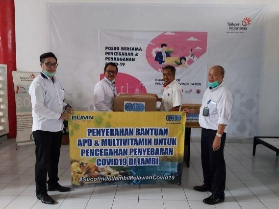
Jambi - Upaya pencegahan dan antisipasi penyebaran Covid-19 di Provinsi Jambi, salah satunya Witel Jambi dalam posko bersama pencegahan dan penanganan COVID-19 menerima bantuan dari PT.SUCOFINDO (Persero) Cabang Jambi.Bantuan tersebut diberikan secara langsung oleh Kepala Cabang PT.SUCOFINDO yang diwakilkan oleh Ahmad Sulaiman Nasution,Harya dan Aji kepada GM Witel Jambi Muhammad Zaidan Jauhari selaku Koordinator Satgas TanggapnBencana BUMN.Senin (13/04).
"Kami berterima kasih kepada PT.SUCOFINDO, sudah memberikan bantuan ini, apalagi memang jenis bantuan yang diserahkan memang sulit dicari saat ini," kata Zaidan GM Witel Jambi.
Dijelaskan oleh Sulaiman, dalam menanggapi penyebaran Covid-19 ini bukan tugas pemerintah saja, tapi semua pihak baik perusahaan mau pun masyarakat Jambi, sebab hal ini menjadi persoalan nasional sehingga diperlukan rasa gotong royong dalam mencegah dan mengantisipasi penyebaran dalam penanganan Covid-19 ini di kota Jambi.
"Mari bersama-sama bergotongroyong mencegah dan mengantisipasi penyebaran dalam Penanganan Covid-19 ini," ajak Zaidan.
Lanjutnya, bantuan yang diserahkan PT.SUCOFINDO ini berupa 5 box masker medis, 10 set baju APD, 5 Set Baju Coverall Disposible, 10 Set Visor Mask dan Nurse Cap, 7 Lusin Sarung Tangan Kain, 1 unit Thermometer Gun + Battery, 100 pasang cover shoes, 4 box hand gloves disposable, 20 box Multivitamin Supertin dan 4 Dus Susu Bear Brand.
"Bantuan ini akan kami sebarkan ke setiap unit yang membutuhkan" jelas Zaidan.Kegiatan ini diakhiri dengan foto bersama. (Lulu/Puspandoyo)
GM Witel Jambi Lakukan Kunjungan ke Beberapa BUMN
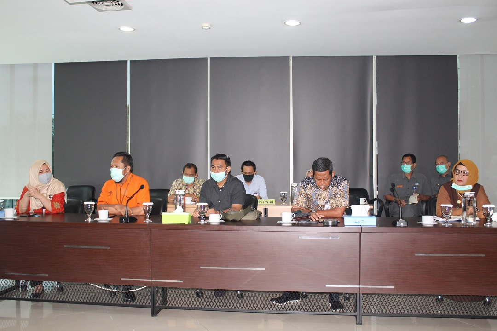
Jambi – Dalam rangka Penanganan COVID-19, Witel Jambi sebagai Koordinator Satgas Tanggap Bencana BUMN melakukan kunjungan ke beberapa BUMN untuk membahas bantuan yang akan diberikan kepada masyarakat Jambi ataupun team medis di Provinsi Jambi dalam Penanganan COVID-19.Hadir pada saat kunjungan GM Witel Jambi Muhammad Zaidan Jauhari di dampingi Manager Warroom Yulkhairi dan Manager G.S Lukman, Rabu (08/04).
Kegiatan kunjungan dimulai pada jam 09.00 pagi, Witel Jambi melakukan kunjungan ke PTPN 6 menemui Direktur Komersial PTPN 6 Amin Sembiring dilanjutkan dengan kunjungan ke PT.Bulog untuk menemui Ketua Forum Sinergi BUMN H.Bakhtiar dan diakhiri dengan kunjungan ke PT,Jasa Raharja menemui Sekretaris BUMN Eva Yuliasta.
Kunjungan yang dilakukan oleh GM Witel Jambi ke beberapa BUMN ini bertujuan untuk meningkatkan silaturahmi dan meningkatkan keeratan solidaritas antar Witel Jambi dan BUMN lainnya.Berharap dengan kunjungan ini juga dapat membentuk suatu kerjasama yang akan dijalankan untuk memberikan bantuan dalam penanganan diri terhadap COVID-19. Tidak lain dari mencegah dari tertularnya COVID-19.(Lulu/Puspandoyo)
Witel Jambi Serahkan Bantuan BPBD Provinsi Jambi
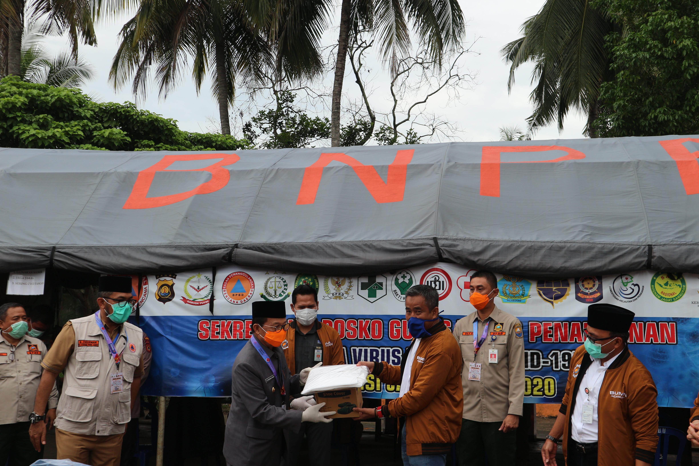
Jambi – Witel Jambi dalam pembentukan satuan tugas bencana nasional BUMN menjadi Koordinator Satuan Tugas Tanggap Bencana BUMN Wilayah Jambi dan Ketua Forum Sinergi BUMN H.Bakhtiar menyerahkan bantuan untuk penanganan COVID-19 Provinsi Jambi tepatnya di Kantor BPBD Provinsi Jambi.Turut Hadir dalam pemberian bantuan itu selain GM Witel Jambi Muhammad Zaidan Jauhari yang di damping oleh Manager G.S Lukman, Manager Warroom Yulkhairi dan Asman CDC Puspandoyo terdapat juga sejumlah anggota dan perwakilan Forum Sinergi BUMN Jambi Jasa Raharja, POS, Sucofindo, PTPN 6 dan Biro ANTARA Jambi sebagai bentuk sinergi BUMN yang kompak dalam penanganan Pandemi Covid-19. Selasa (07/04) Bantuan yang diberikan senilai 94,7 juta rupiah ini diserahkan langsung oleh Ketua Forum Sinergi BUMN Jambi H Bakhtiar di dampingi GM Witel Jambi Muhammad Zaidan Jauhari kepada Ketua Gugus Tugas Penanganan COVID-19 Gubernur Jambi Fachrori Umar dan Sekda Provinsi Jambi H Sudirman.
Bantuan yang diserahkan berupa masker, baju APD 100 buah, masker 500 buah,Nurse Cap 10 box,coverall disposable 100 unit, Latex Sarung Tangan sejumlah 200 pasang, 3 buah thermometer gun,cover shoes 250 pasang dan hand gloves disposable 100 pasang. Kegiatan penyerahan bantuan COVID-19 ini diawali dengan Ketua Forum Sinergi BUMN Provinsi Jambi H.Bakhtiar mengungkapkan kegiatan penyerahan bantuan ini sebagai tanggung jawab dari BUMN untuk membantu pemerintah daerah dalam menangani COVID-19 yang merupakan masalah bersama tak hanya di Provinsi Jambi namun juga di seluruh dunia.Kami mendukung upaya yang telah dilakukan oleh pemerintah dan berharap dengan bantuan ini bisa memberikan manfaat untuk membantu team medis dan petugas di gaeda terdepan dalam menangani COVID-19.Tetap Sehat dan social distancing untuk menghindari diri dari penularan Covid-19.
Dilanjutkan oleh GM Witel Jambi Muhammad Zaidan Jauhari mengatakan Barang yang diserahkan memang dibutuhkan untuk penanganan COVID-19 setelah saya sudah berkoordinasi terkait kebutuhan di rumah sakit Jambi ini. Pendistribusian ini diserahkan kepada Gugus Penanganan COVID-19 Gubernur Jambi Fachrori Umar dengan harapan semua masyarakat Jambi dapat terbebas dari COVID-19 dan bantuan yang diberikan bisa untuk menanggulangi COVID-19 ini. Pada kesempatan ini, Gubernur Jambi Fachrori Umar juga mengajak keluarga besar Forum BUMN untuk membantu mensosialisasikan pencegahan COVID-19 melalui Sosialisasi budaya hidup bersih dan sehat, memakai masker saat berpergian keluar rumah, rajin mencuci tangan dengan sabun dan handsinitizer serta mematuhi aturan yang saat ini berjalan untuk dapat social distancing dan juga physical distancing demi menjaga diri dari resiko untuk tertularnya Covid-19.(Lulu)
Satgas Tanggap Bencana BUMN Witel Jambi, Lakukan kunjungan RSUD Raden Mataher
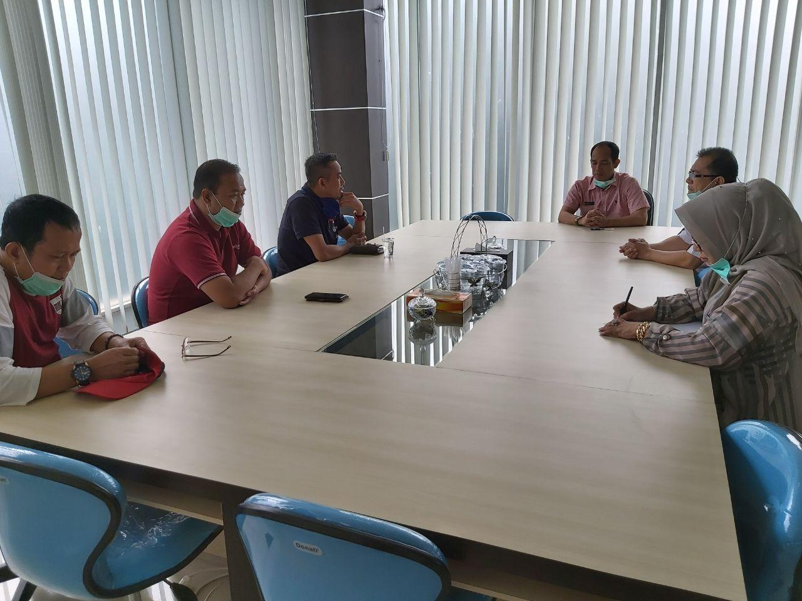
Jambi - GM Witel Jambi Muhammad Zaidan Jauhari di dampingi oleh Manager Warroom Yulkhairi dan Manager G.S Lukman melakukan silaturahmi ke RSUD Raden Mattaher di Jl. Letjen Suprapto No.31, Telanaipura, Kec. Telanaipura, Kota Jambi, dalam rangka Witel Jambi menjadi Koordinator Satgas Tanggap Bencana COVID-19. Sabtu (04/04).
Kegiatan Kunjungan RSUD Raden Mataher ini mengenai bantuan yang akan di berikan oleh Witel Jambi selaku Satgas Tanggap Bencana BUMN untuk RSUD Raden Mataher dan bantuan yang telah di terima secara langsung oleh Direktur RSUD Raden Mattaher Dr.Ferry Kusnadi yang akan diberikan kepada team Medis yang membutuhkan peralatan dan perlengkapan dalam menangani COVID-19 yang sudah tidak asing lagi ini.
Kegiatan Kunjungan RSUD Raden Mataher ini mengenai bantuan yang akan di berikan oleh Witel Jambi selaku Satgas Tanggap Bencana BUMN untuk RSUD Raden Mataher dan bantuan yang telah di terima secara langsung oleh Direktur RSUD Raden Mattaher Dr.Ferry Kusnadi yang akan diberikan kepada team Medis yang membutuhkan peralatan dan perlengkapan dalam menangani COVID-19 yang sudah tidak asing lagi ini.
“Semoga dengan memberikan bantuan COVID-19 ini dapat mengurangi jumlah penderita COVID-19 di Kota Jambi dan daerah sekitarnya” Ungkap Zaidan mengakhiri pembicaraannya dalam kegiatan kunjungan di RSUD Raden Mataher ini.
AirNav Indonesia serahkan bantuan masker
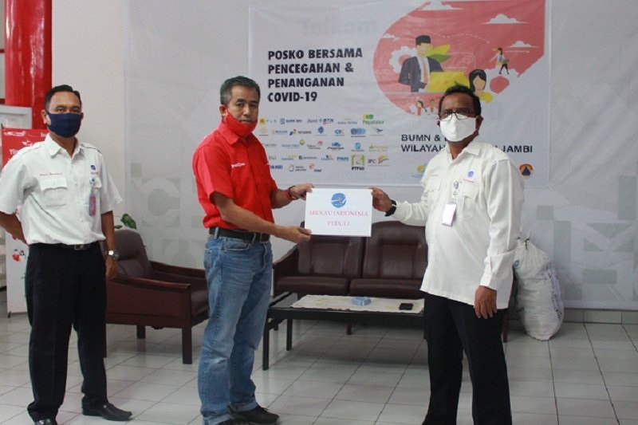
AirNav Jambi serahkan bantuan masker Perum Lembaga Penyelenggara Pelayanan Navigasi Penerbangan Indonesia (LPPNPI) atau AirNav Indonesia Cabang Jambi menyerahkan bantuan masker sebagai bentuk kepedulian membantu penanganan COVID-19 di Provinsi Jambi. Penyerahan masker bantuan itu dilakukan oleh GM Airnav Indonesia Cabang Jambi Nizwar ke Posko Satgas Bencana BUMN Wilayah Jambi, Rabu (23/3).
Bantuan diterima oleh Koordinator Satgas Bencana BUMN Wilayah Jambi M Zaidan Zauhari. GM AirNav Indonesia Cabang Jambi Nizwar menyebutkan bantuan itu diserahkan dalam bentuk masker non medis untuk membantu petugas di garda depan penanganan COVID-19. "Bantuan yang digelar bersama-sama ini merupakan bentuk kepedulian dan ikhtiar bersama untuk mencegah COVID-19," kata Nizwar. Ia menyebutkan semua pihak harus bergerak dan berperan baik pemerintah, institusi, dunia usaha dan juga masyarakat dengan mematuhi protokol kesehatan pencegahan COVID-19. "Masyarakat diharapkan bersama-sama melaksanakan dan disiplin mematuhi anjuran atau perintah yang dikeluarkan oleh pemerintah guna memutus penyebaran COVID-19," kata pria kelahiran Aceh itu.
AirNav Indonesia merupakan BUMN termuda yang berdiri pada 13 September 2012 dan bertanggung jawab mengawal Flight Information Region (FIR). AirNav Indonesia terbagi menjadi 2 ruang udara berdasarkan Flight Information Region (FIR) yakni FIR Jakarta yang terpusat di Kantor Cabang JATSC (Jakarta Air Traffic Services Center) dan FIR Ujung Pandang yang terpusat di Kantor Cabang MATSC (Makassar Air Traffic Services Center). AirNav Indonesia merupakan tonggak sejarah dalam dunia penerbangan nasional bangsa Indonesia, karena AirNav Indonesia merupakan satu-satunya penyelenggara navigasi penerbangan di Indonesia.
 :
: